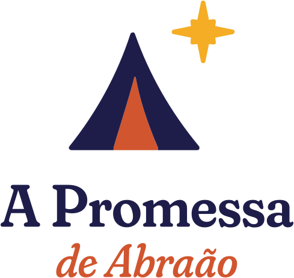
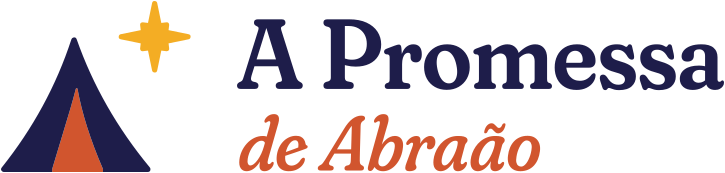
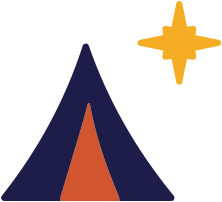
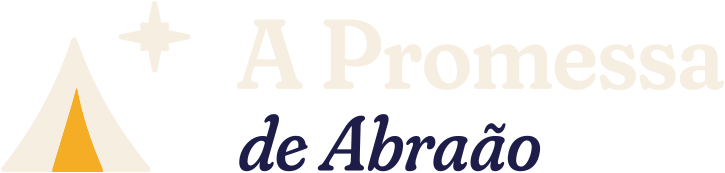

Manual de marca em uma página
01 O que o logo significa

- A tenda é a casa de Abraão, peregrino, que recebeu estrangeiros na porta (Gn 18): uma igreja acolhedora.
- A porta acesa (urucum) diz a quem está na rua: tem lugar pra você.
- A estrela é a promessa de Gn 15:5, “olha para o céu e conta as estrelas”. Fica do lado de fora, como Abraão, levado para fora da tenda. Os quatro raios principais desenham, com sobriedade, uma cruz.
- O “A” da tenda é de “A Promessa” e de “Abraão”.
02 Área de proteção
Deixe em volta do logo um espaço livre igual à altura da estrela (x). Nenhum texto, foto ou borda entra nessa área.
03 Versões e quando usar




Horizontal: rodapés, assinaturas, banners largos, fachada
Símbolo: perfil, favicon, selo04 Tamanho mínimo
120 px (tela)
160 px
24 px (favicon: 16 px)
Abaixo disso o nome fica ilegível: use só o símbolo. Para banner de rua, o logo deve ocupar pelo menos 1/5 da largura.
05 Usos incorretos (não faça) e corretos
Não estique nem achate
Não gire
Não troque as cores
Sem sombras, brilhos ou efeitos
Não use a versão colorida em fundo escuro
Não aplique sobre fundos ou fotos poluídas
Não reescreva o nome com outra fonte
Não espelhe: a estrela fica sempre no alto, à direita
Colorida sobre Areia ou branco
Fundo escuro sobre Anil

Branca sobre foto escura e tranquila

Versão “sobre Urucum” (ou branca)
06 Paleta
CMYK ≈ 90 88 30 40Céu noturno · fundo e texto
CMYK ≈ 88 85 10 5Apoio · degradês, painéis
CMYK ≈ 0 35 90 0A estrela · destaques
CMYK ≈ 10 78 88 2Calor · ação social
CMYK ≈ 2 5 11 0Papel · no lugar do branco
Proporção: Anil 40% · Areia 25% · Madrugada 15% · Urucum 12% · Ouro 8%. Texto pequeno só em Anil sobre Areia ou Areia/Ouro sobre Anil. Urucum com texto, só em tamanhos grandes. CMYK aproximado: peça prova de cor à gráfica.
07 Tipografia (Google Fonts)
Títulos, nomes e versículos (itálico). Peso 600, eixo Soft 100. Alternativa: Georgia.
Textos, horários, endereços, chamadas em caixa alta. Pesos 400–700. Alternativa: Arial.
08 Jeito de falar
- Acolhedor e direto: fale com você, como quem convida para a própria casa.
- Frases curtas, sem “evangeliquês” e sem promessas exageradas.
- Convide em vez de cobrar: “Tem lugar pra você”, “Venha servir com a gente”.
- Uma ideia por peça. Se precisar explicar muito, use a legenda do post.
09 Fotos e ação social
- Pessoas reais, luz natural, expressões verdadeiras. Evite banco de imagem.
- Pregador: foto vertical, do peito para cima, fundo simples. Entra sempre no arco-porta.
- Ação social: só publique o rosto de quem foi atendido com autorização. Prefira voluntários, mãos servindo, comida, o lugar. Nunca use a fragilidade de alguém como propaganda.